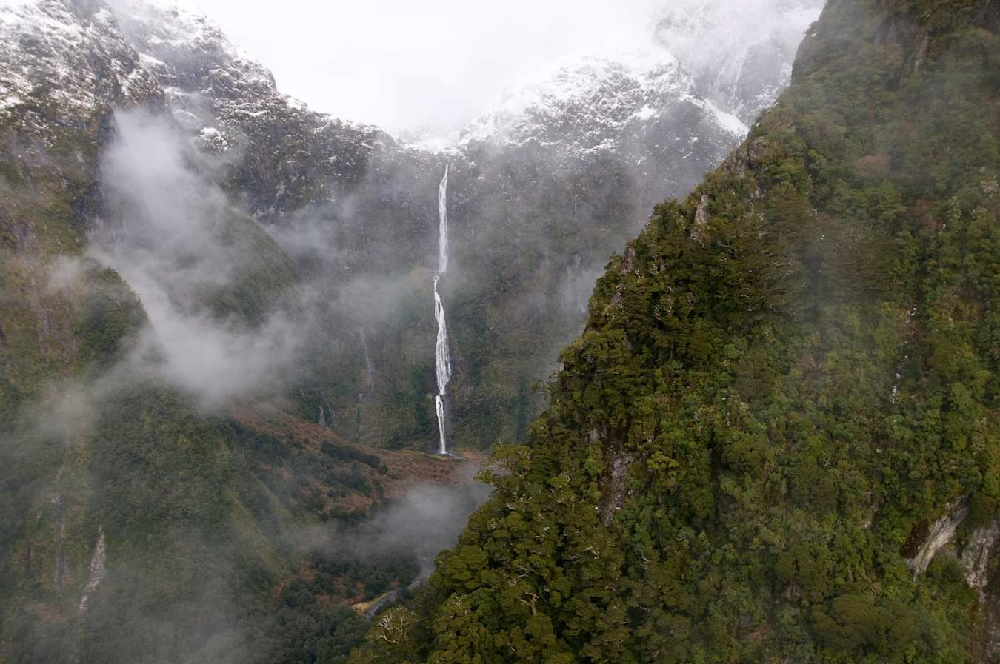
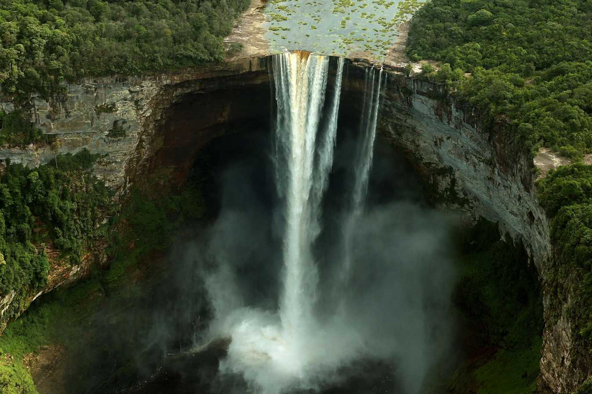
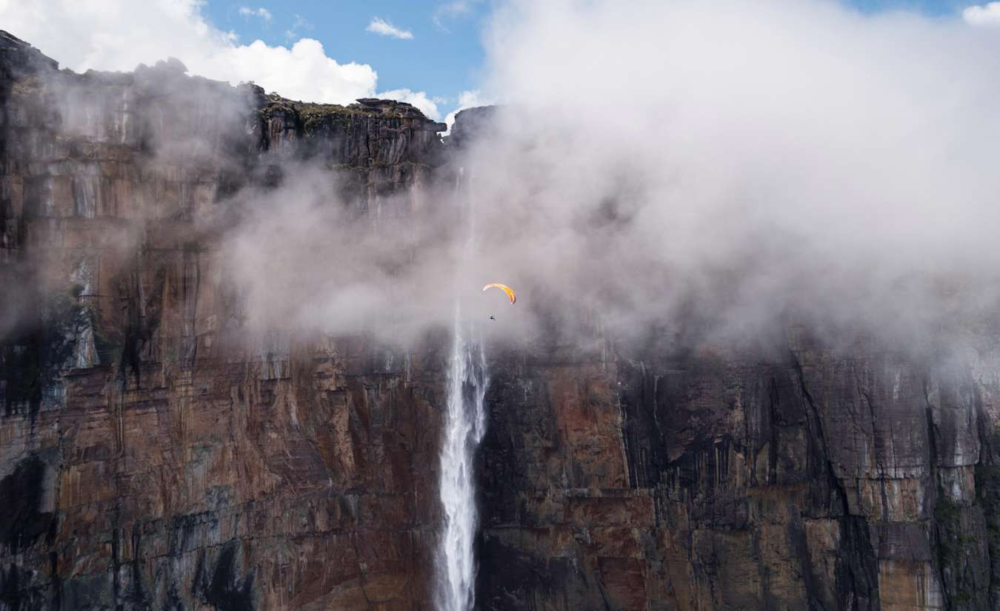

Чтобы добраться до водопада Сазерленд, тебе придется отправиться в четырехдневный поход по знаменитому местному маршруту Милфорд Трейл. Придется пройти пешком 53 километра, по пути встречая мосты, горные тропы и другие интересные места в Национальном Парке Фьордлэнд. Ты поймешь, что это настоящая магия.
Единственный способ добраться до Кайетура – взять чартерный рейс до ближайшего аэродрома, а затем пройти 2-3 часа пешком по джунглям. Это редкое сочетание высокого водопада над быстрой рекой по-настоящему завораживает, являя собой почти сюрреалистичное зрелище.
Единственный способ добраться – чартерный рейс до Национального парка Наханни, который полетает прямо над водопадом. Оттуда предстоит небольшое пешее путешествие к вершине.Этот огромный водопад спускается вниз длинными линиями из быстрых и маленьких капель, а затем разбивается об огромный 100метровый выступ, который называется Камень масонов.
добраться до Ангельского водопада – задача не из простых: надо долететь до лагеря Канаима, точки отправления речных маршрутов, где гидами выступают местные жители - пемоны. После четырехчасового путешествия вверх по реке тебе придется ступить на скользкую тропу, пролегающую через джунгли, это займет от 60 до 90 минут.

Сазерлэнд - самый высокий водопад Новой Зеландии – 580 метров в высоту

Кайетур - самый большой одиночный водопад, один из самых мощных в миреВодопады Вирджиния, Северо-Западные территории, Канада - массивные водопады, которые включены в список ЮНЕСКО

Самый высокий водопад в мире, 979 метров, также известный как Ангельский водопад или Сальто Анжел